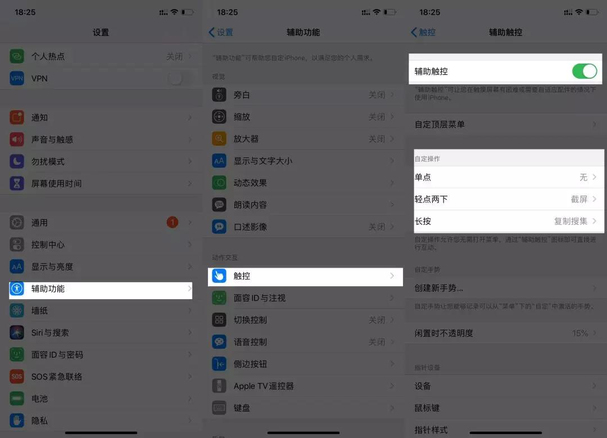

The Most Popular Note App in iPad
这是 iPad 自带的分屏，将其他程序从程序坞拉上去，放到软件右边，可以选择不同的比例，1:1，还是 2:1，看你的习惯爱好了。 这能大大加大 NB 与其他软件的协同效用，比如，可以分屏相册，直接将相册的照片放到 NB 里；现在大家都在用企业微信上网课，也可以直接把企业微信的照片拖到 NB 里，省去下载的步骤 这些分屏，让这些软件协同为你的学习生活助力。
将其他页面从侧边栏滑出，点击「在左边显示」或「在右边显示」，在 NB 内部，你的笔记就可以双屏展示了。 这可以用在你的课堂打草稿，以及看答案订正错题，很方便。 借由内部与外部分屏，你甚至可以同时四屏，NB 双屏，旁边分一个屏，系统再滑出分一个……
如果你更新了 iPadOS ，且你的 iPad 支持 Pencil，那你可以直接从屏幕左下角或右下角滑到中央，可以实现快速截屏。 也可以在系统里，用辅助触控来快速截屏，「设置-辅助功能-触控-辅助触控-自定操作」，我习惯用轻点两下来截屏，你也可以设置你喜欢的方式。
